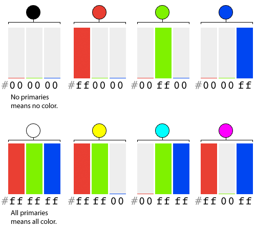
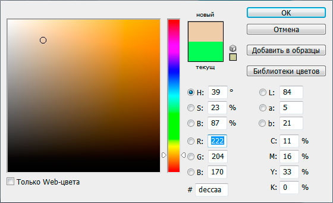
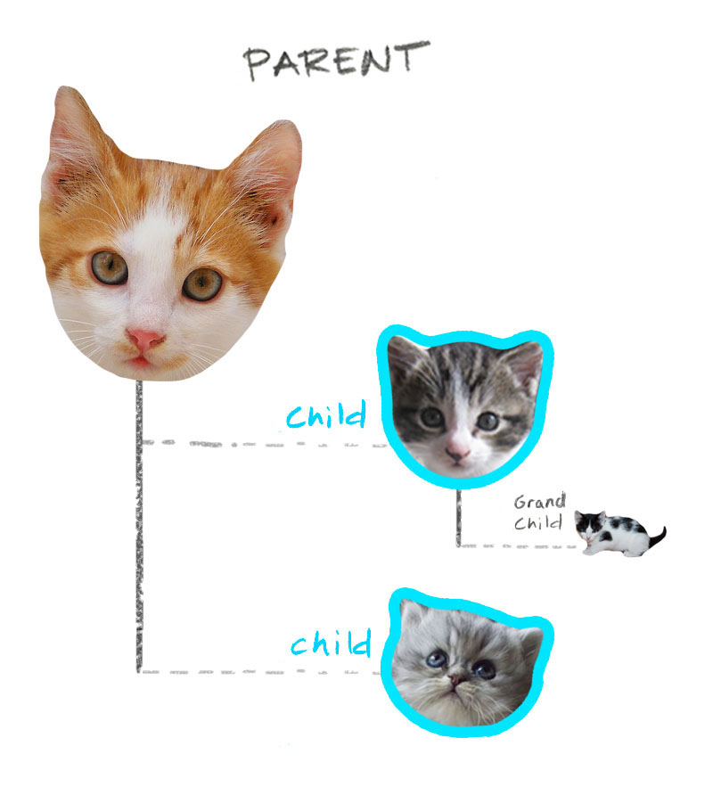

Котики
Котики - это не только ценный мех, но и достаточно разочарований.
Котики - это не только встроенный мурчальник, но и немало человеческого счастья.
Котики - это не только испорченная мебель, но и много килограмм пушистого пузика.
Цвет текста и фона в CSS
Вернёмся к правилу, перекрашивающему параграфы в красный цвет:
p {
color: red;
}
Существует только 147 ключевых слов: red, darkred, green, limegreen, blue, skyblue...
Что делать, если подходящего ключевого слова нет?
Цветовая модель RGB

Для браузеров используется RGB модель цветовоспроизведения, где R,G,B - первые буквы основных цветов(красный, зеленый, синий) - и выбор именно
этих цветов обусловлен особенностями цветовосприятия человеческого глаза. Согласно этой модели, любой цвет является результатом смешения
основных цветов в разных пропорциях.
Hex-цвета

Цвет можно задать в виде 16-ричного кода.
В этом случае цвет представляется в виде 6-ти значного кода #RRGGBB, где RR означает интенсивность красного, GG - интенсивность зеленого, BB -
интенсивность синего цвета, согласно модели RGB. Каждая из трех интенсивностей может принимать значения от 0 до 255, и записывается при помощи
2х значного 16-ричного кода.
Например: color: #000000; - черный цвет, color: #ff00ff; - цвет фуксии.
RGB формат
Также можно задать цвет в rgb-формате: воспользовавшись функцией rgb(r, g, b) где соответственно r, g и b - соответствующие интенсивности
красного, зеленого и синего цветов.
Например: color: rgb(0,0,0); - черный цвет, color: rgb(255, 0, 255); - цвет фуксии.
RGBA формат
Но это еще не все: мы можем задать полупрозрачный цвет, воспользовавшись функцией rgba(r,g,b,a), где параметры r,g и b имеют точно такой же
смысл, как и в функции rgb, а последний, четвертый параметр “a” может принимать значения от 0 до 1 и означает степень непрозрачности цвета,
где 0 - полная прозрачность, 1 - полная непрозрачность.
color: rgba(0,0,0,0.5) - черный цвет, прозрачный наполовину
color: rgba(255,0,255,0.2) - цвет фуксии с 20%-ной непрозрачностью.
Код цвета можно подсмотреть
Найти нужный цвет с помощью онлайн-севриса:

Код цвета можно подсмотреть
Определить «Пипеткой»:
 «Пипетка» в Figma
«Пипетка» в Figma
«Пипетка» в Photoshop
Цвет фона
Цвет фона можно задавать в тех же форматах, что и цвет текста.
h2 {
background-color: lightyellow;
}
p {
background-color: #252850;
}
Котики
Котики - это не только ценный мех, но и достаточно разочарований.
Котики - это не только встроенный мурчальник, но и немало человеческого счастья.
Котики - это не только испорченная мебель, но и много килограмм пушистого пузика.
Комбинации селекторов

В качестве селектора не обязательно может выступать одиночное название тега - чаще всего это комбинации тегов.
Селектор потомков
div strong - выберет все теги strong, которые расположены внутри div (“все потомки” - дети, внуки, правнуки, и т.д.) Пример
Котики
Котики - это не только ценный мех, но и достаточно разочарований.
Котики - это не только встроенный мурчальник, но и немало человеческого счастья.
Котики - это не только испорченная мебель, но и много килограмм пушистого пузика.
- Все любят котиков
- Котики любят всех
Котики - это не только ценный мех, но и достаточно разочарований.
Дочерний селектор
div > p - выберет все теги p, которые расположены внутри div и являются его детьми. Пример
Котики
Котики - это не только ценный мех, но и достаточно разочарований.
Котики - это не только встроенный мурчальник, но и немало человеческого счастья.
Котики - это не только испорченная мебель, но и много килограмм пушистого пузика.
- Все любят котиков
- Котики любят всех
Котики - это не только ценный мех, но и достаточно разочарований.
Свойства списков
Для маркированных и нумерованных списков у нас есть несколько специальных свойств, которые не имеет смысла использовать для прочих тегов.
Тип маркера
list-style-type - позволяет задать тип маркера
Для маркированных списков доступы следующие значения:
disc - Заполненный кружок(значение по умолчанию)circle - Пустой кружокsquareКвадрат
Для нумерованных списков доступы следующие значения:
decimal арабские цифры(значение по умолчанию)lower-roman - строчные римские цифры, например i , ii , iii и т.д.upper-roman - заглавные римские цифры, I, II , III и т.д.lower-alpha - строчные буквы латинского алфавита, a, b, c и т.дupper-alpha - заглавные буквы латинского алфавита A, B, C и т.д.
Картинка в качестве маркера
list-style-image - свойство позволяет установить любую картинку в качестве символа маркера
.list{
list-style-image: url("../i/galochka.png");
}
.list{
list-style-image: url("http://somewebsite.ru/images/galochka.png");
}
Маркер внутри или снаружи списка
list-style-position - позволяет указать положение маркера списка.
outside для положения снаружи(является значением по умолчанию),
inside - внутри.
Обычный текст
- Список с значением list-style-position: outside
- Список с значением list-style-position: outside
- Список с значением list-style-position: outside
Обычный текст
- Список с значением list-style-position: inside
- Список с значением list-style-position: inside
- Список с значением list-style-position: inside
Задача
Стоматологическая клиника хочет стильный яркий сайт, у них уже есть готовая разметка, и нужно позаботиться о стилях для нее:
Задания:
Сделать заголовок h1 зеленым и курсивным
- Какой селектор будет достаточным ?
h1
- С помощью какого свойства и значения мы можем поменять цвет и начертание?
color: green;
font-style: italic;
Задания:
Увеличить элементы списка "мы предлагаем", являющимися детьми, до размера 20px, установить в качесте маркера квадратики, при этом "внуки" (протезирование) уменьшить до 14px, сделать жирными, а в качестве маркера установить пустые кружки.
- Какой селектор будет достаточным для того, чтобы выбрать элементы списка "мы предлагаем"?
ul li
- С помощью какого свойства и значения мы можем задать нужный размер шрифта?
font-size: 20px;
- С помощью какого свойства и значения мы можем задать маркеры в форме квадратиков?
list-style-type: square;
Задания:
Увеличить элементы списка "мы предлагаем", являющимися детьми, до размера 20px, установить в качесте маркера квадратики, при этом "внуки" (протезирование) уменьшить до 14px, сделать жирными, а в качестве маркера установить пустые кружки.
- Какой селектор будет достаточным для того, чтобы выбрать элементы списка "протезирование"?
ul ul li
- С помощью каких свойств и значений мы можем изменить размер и жирность текста?
font-size: 14px;
font-weight: bold;
- С помощью какого свойств и значения мы можем задать маркеры в форме пустых кружков?
list-style-type: circle;
Задания:
Сделать текст "детскую стоматологию" и "взрослые стоматологические отделения" белого цвета на красном фоне и курсивными
- Какой селектор будет достаточным ?
p > span или p span
- С помощью каких свойств и значений мы можем поменять цвет фона, цвет шрифта и начертание?
background-color: red;
color: white;
font-style: italic;
Подведем итоги
Мы умеем:
- Составлять селектор, чтобы добраться до нужных элементов;
- Управлять свойствами шрифта: размер, начертание, цвет, семейство, фон;
- Управлять свойствами списков: форма и положение маркера.
Задавайте вопросы и напишите отзыв о лекции!
Татьяна Тен
 Татьяна Тен Нетология
Татьяна Тен Нетология